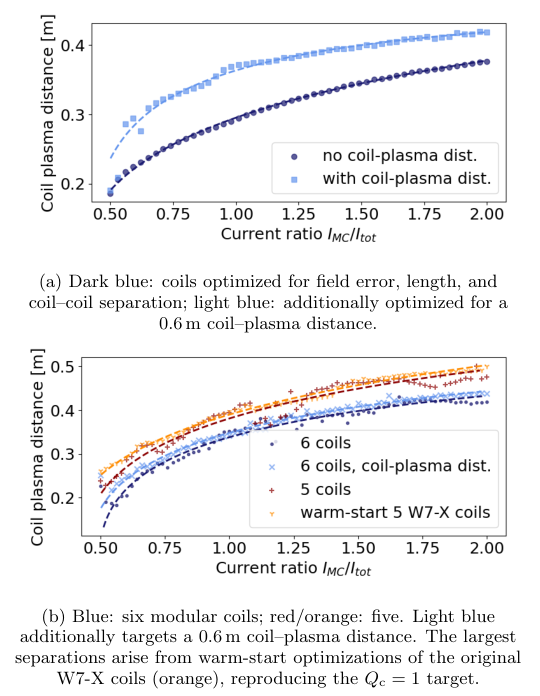

反向环向场线圈：解耦模块线圈电流与净环向场
A New Degree of Freedom in Stellarator Coil Design
原文与出版信息 ↗ · 据用户提供版本整理；公式离线预渲染；原图为关键图精选，非全文翻译。
一、核心问题：净链接电流固定，模块线圈电流也必须固定吗？
Henneberg 与 Zettl 的答案是：不必。等离子体要求的总链接电流由安培定律约束，但可以让模块线圈承担更多正向电流，再用反向环向场线圈（reversed toroidal field，RTF）补偿。这样，在不改变净链接电流的条件下，模块线圈用于产生三维整形的电流自由度被释放。论文在一个紧凑准轴对称构型和 W7-X 标准构型上进行固定边界 Stage-II 优化，发现可实现的线圈—等离子体距离增大。
结论边界：这是两类目标平衡上的概念验证，不是“任意仿星器都能无代价增加间距”的定理；距离按丝状线圈中心线计算，尚未扣除更大电流所需的绕组厚度。（原文第 1–4 页）
二、从概念分解到新自由度
2.1 模块线圈可理解为 TF 分量加偶极分量
把一个非平面模块线圈近似分解为一个链接等离子体的平面 TF 回路和若干小偶极回路。邻接小回路的反向电流局部抵消，余下有效电流沿原模块线圈流动。偶极数量增加、尺度减小时，这种表示更精细。它只是解释磁场标度的概念分解，不要求实际制造两套分离绕组。（图 1，第 1–2 页）
远离小回路时，磁矩为 ，磁场为
固定偶极面积及方向后，。若要把产生同等整形场的线圈移远，所需电流约按 增大。传统模块线圈同时提供主环向场和三维整形场，二者不能独立调节：整形所需电流被主场要求锁住。
2.2 RTF 补偿的是链接电流，不是所有局部磁场
令 、，净链接电流仍为原值。定义
对应没有净反向补偿； 时模块线圈电流超过净链接电流，RTF 提供负贡献。保持上述积分不意味着局部磁场自动保持不变，因此还必须重新优化模块线圈形状，使法向场误差足够小。
2.3 为什么不能只用纯偶极的三次方标度？
模块线圈还有 TF 分量。原文将其主要贡献与偶极项合并，得到几何相关的近似标度
后一式是拟合式：系数依赖几何， 用于表示假想零间距下仍需非零模块电流。不能据它直接推算任意装置的最大间距。作者用它拟合两组电流扫描，解释总体趋势。（原文式 3–4，第 2 页）
三、计算实验如何控制变量
使用 SIMSOPT 的 Stage-II 方法，固定目标等离子体边界，所有线圈采用丝状电流。每半场周期有若干独立模块线圈，按仿星器对称性复制；另加 20 个均匀分布、包围模块线圈的圆形平面 RTF 线圈。RTF 的位置和形状固定，各组线圈内部等分总电流。扫描 ，每次只优化模块线圈几何，而不让优化器自由改变电流。（第 2 页）
| 目标 | 主要参数 | 基础目标函数 |
|---|---|---|
| 紧凑 QA | ，展弦比 5，4 场周期，， | 二次磁通误差、总长度、线圈间最小距离惩罚 |
| W7-X 标准构型 | ，展弦比 10.75，5 场周期，，QI 真空场 | 上述项目加局部曲率和平均平方曲率惩罚 |
基础扫描先不显式奖励线圈—等离子体距离，以检验间距是否自发改善；随后再加入距离目标。每次电流比扫描保持权重和目标值不变。大部分计算从圆形平面线圈冷启动，另用现有 W7-X 线圈暖启动检验较成熟设计的改善空间。

四、结果：改善成立，但幅度与优化条件有关
- 紧凑 QA：模块线圈总电流加倍时，最小间距增加 27.8%；若已经显式优化间距， 的增益仍为 12.6%，同时观察到长度和曲率下降。（图 2a，第 3 页）
- W7-X 冷启动：有无显式距离目标时，间距增益约为 19–28%。
- W7-X 暖启动：以原线圈为初始值重新优化， 时距离增加超过 25%，其他线圈质量指标相近。（图 2b、4，第 3–4 页）
- 误差—间距权衡：通常强迫线圈远离边界会增大法向场误差。图 3 通过调整距离权重、以 0.7 m 为距离目标，表明提高电流比可在相同误差下实现更大距离，而不只是“用更差场质量买距离”。
线圈数量也不是越多越好。W7-X 从每半场周期 5 个模块线圈增为 6 个时，总模块电流固定意味着单线圈电流下降约 1/6，扫描中间距系统性变小；但 6 线圈方案在高电流比时更容易取得较低磁通误差。这提示最佳线圈数依赖目标间距、单线圈电流与场质量，而不能只比较总自由度。
五、与磁场梯度尺度、工程约束的关系
作者认为结果与 Kappel 等人关于电流势表面最大电流密度影响可实现距离的结果一致。这里的贡献不是推翻磁梯度尺度代理，而是说明：同一个目标边界的可实现线圈间距还取决于允许的电流分配和线圈类别。因此，比较 QI 与 QA/QH 的距离代理时，应同时固定或报告电流上限、线圈数量、拓扑、误差容限和优化目标。
单纯整体提高环向磁场不能代替 RTF 机制：若旋转变换和展弦比固定，所需极向与环向场一起按比例增长，原有约束没有解耦。RTF 的关键是改变模块线圈电流与净链接电流的比例，而非把整个场一起放大。
工程上尚有三笔账未结：第一，在固定电流密度的直觉估计下，线圈厚度可能约随 增加，因此中心线间距增益不等于净屏蔽空间增益；第二，额外 RTF 绕组增加材料和系统复杂度；第三，电磁力可能增加、略降或不变，论文只报告初步观察，未完成结构优化。RTF 的形状、位置、电流和局部化布置仍是后续设计变量。（第 4 页）
六、自检问题
- 为什么 不变不能保证边界磁场不变？积分约束遗漏了哪些局部信息？
- 比较两个方案间距时，为什么必须同时给出场误差、电流比和冷／暖启动条件？
- 若绕组厚度增加，怎样把中心线距离增益转换为真正可用于包层与屏蔽的空间增益？
来源：Sophia A. Henneberg、Annika Zettl，A New Degree of Freedom in Stellarator Coil Design，arXiv:2610.14396v1，所读 PDF 日期为 2026-10-14。本文以该版本第 1–4 页及图 1–4 为依据；原文结论、解释性推导和工程外推在正文中分别标明。